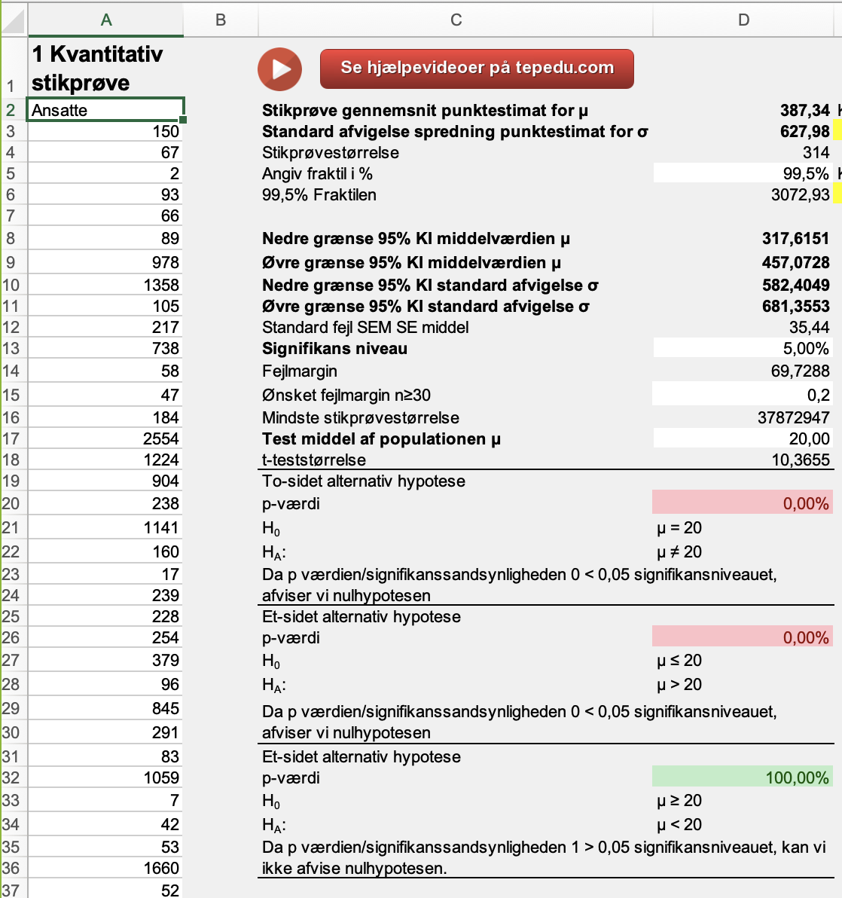
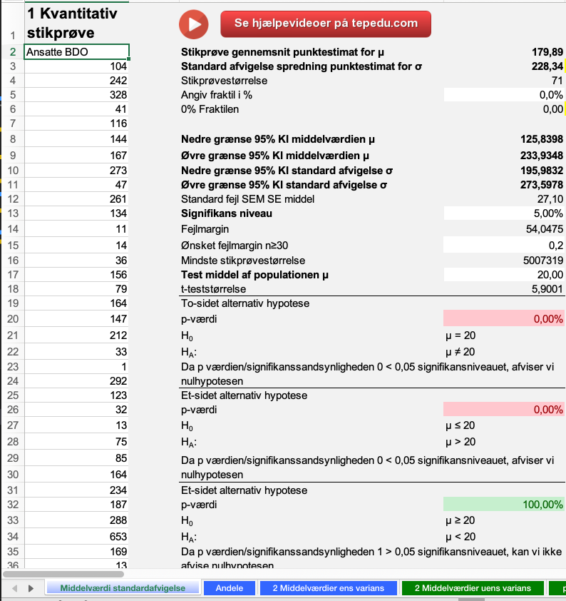

Statistik
Formål:
At kunne beskrive data
Gnist:
Hvordan er konfidensintervallet for ansatte i danske virksomheder?
Anslået tidsforbrug:
5 timer
Forudsætning:
Data og datasæt
Beskrivende statistik
Normalfordelingen
konfidensintervaller
For at besvare de nedenstående spørgsmål, skal man benytte nedenstående Excelfil og
Freestat.
Danske virksomheders regnskabstal Excelfil
Freestat
Vink til opgaven:
Herunder er et forslag til hvordan du kan finde
bestemme svarene opgaven
Herunder ses output fra Freestat vedr. PWC
Herunder ses output fra Freestat vedr. BDO

Vink til opgaven:
Herunder er et forslag til hvordan du kan
besvare
opgaven i Excel
Herunder ses output fra Freestat vedr. PWC
Herunder ses output fra Freestat vedr. BDO